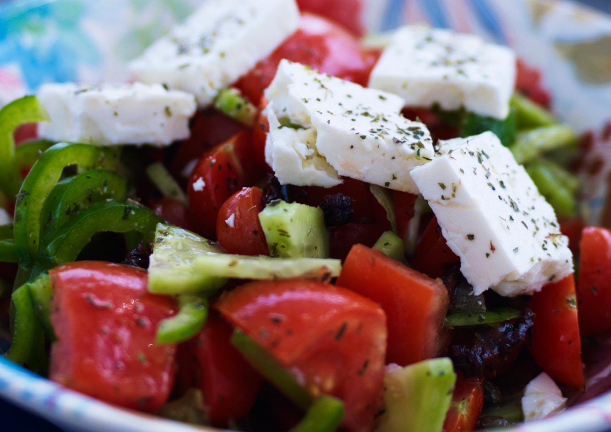

Lasagna alla Bolognese

Description
Greek salad or horiatiki salad is a popular salad in Greek cuisine generally made with
pieces of tomatoes, cucumbers, onion, feta cheese, and olives and dressed with salt,
Greek oregano, and olive oil. Common additions include green bell pepper slices or caper
berries. Greek salad is often imagined as a farmer's breakfast or lunch, as its
ingredients resemble those that a Greek farmer might have on hand.
Source: Wikipedia
Ingredients
- 1 head romaine lettuce- rinsed, dried and chopped
- 1 cucumber, sliced
- 2 large tomatoes, chopped
- 1 (6 ounce) can pitted black olives
- 1 green bell pepper, chopped
- 1 red bell pepper, chopped
- 1 red onion, thinly sliced
- 1 cup crumbled feta cheese
- 6 tablespoons olive oil
- 1 lemon, juiced
- 1 teaspoon dried oregano
- ground black pepper to taste
Preparation
- Step Combine romaine, cucumber, tomatoes, olives, bell peppers,
and red onion in a large bowl; sprinkle with feta cheese.
- Step Whisk olive oil, lemon juice, oregano, and black pepper
together in a small bowl. Pour dressing over salad, toss well to combine, and serve.